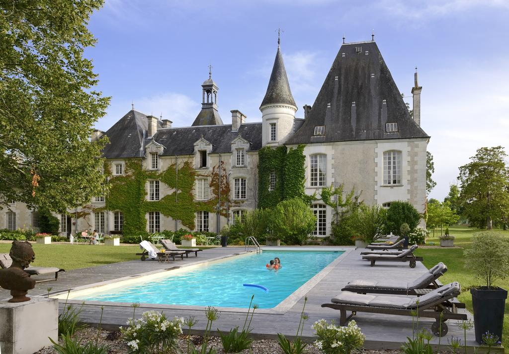
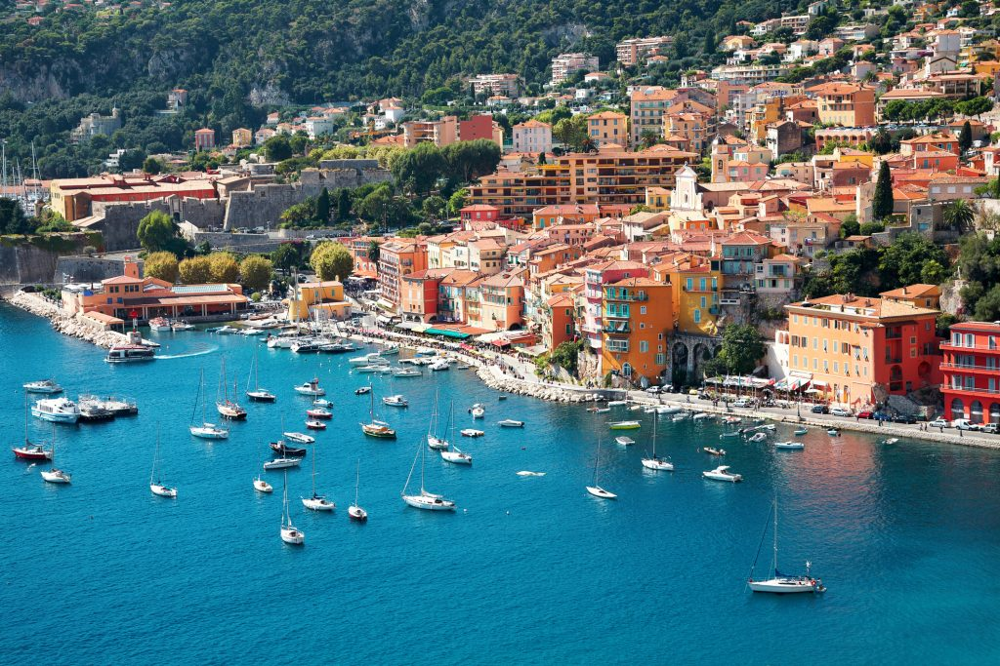

 Tours of Le Mas The historic little village of Le Mas may be small but has a lot to offer. David and Louis will take you to the local shops and cafes as well as showing you all the buildings.
Hiking Le Mas is up in the hills which means it offers some great views. David can take you on a variety of different trails to show you some of the best views in the country.
 Seeing the Sights of Southern France Le Mas is a quite little town which is nice and relaxing, but if you want more shops or more things to do, we can go to the city Nice which is about an hour and a half away, with scenic rides the whole way.
Trips to the Beach You can't go to the south of France and not check out the beautiful beaches. Similar to the trip to Nice, David will bring you to a beach of your choice. One is a very relaxed beach and the other has more to offer with bars and other activities on the beach.